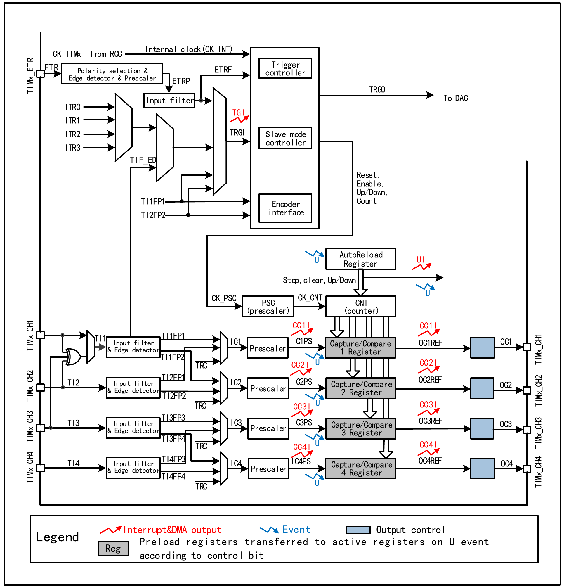
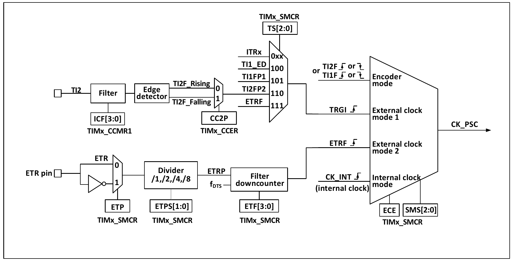
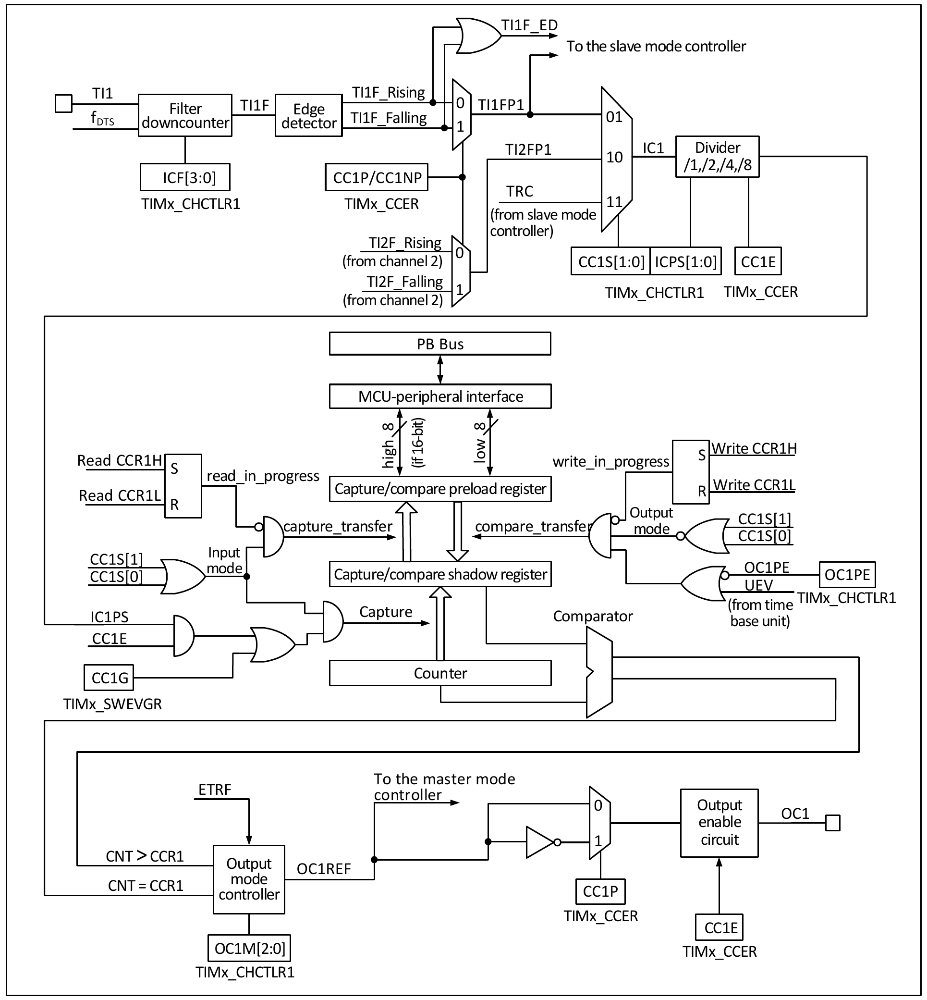
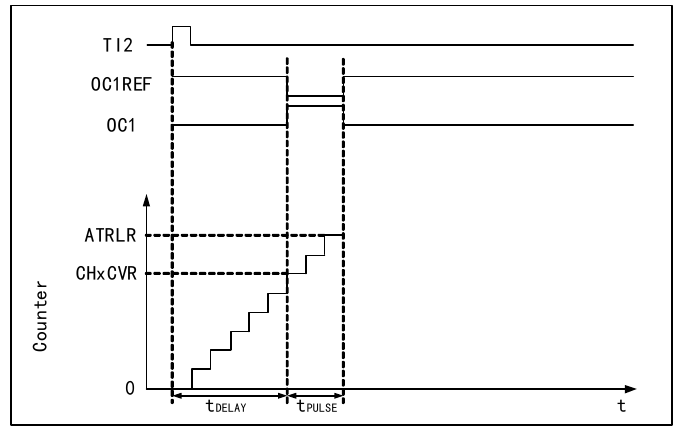

The general purpose timer module contains four 16-bit auto-reload timers (TIM2, TIM3, TIM4, TIM5), used to measure pulse widths or generate pulses of specific frequencies, PWM waves, etc. They can be used in automation control, power supply, and other fields.
The main features of the 16-bit general purpose timer include:

As shown in Figure 15-1, the structure of the general purpose timer can be roughly divided into three parts: the input clock section, the core counter section, and the compare/capture channel section.
The clock of the general purpose timer can come from the HB bus clock (CK_INT), from the external clock input pin (TIMx_ETR), from other timers with clock output capability (ITRx), and from the input end of the compare/capture channels (TIMx_CHx). These input clock signals go through various configured filtering and division operations to become the CK_PSC clock, which is output to the core counter section. In addition, these complex clock sources can also be output as TRGO to other timers, ADCs, and other peripherals.
The core of the general purpose timer is a 16-bit counter (CNT). CK_PSC is divided by the prescaler (PSC) to become CK_CNT, which is finally fed to CNT. CNT supports up-counting mode, down-counting mode, and up-down counting mode, and has an auto-reload register (ATRLR) that reloads the initial value to CNT after each counting cycle ends.
The general purpose timer has four sets of compare/capture channels. Each compare/capture channel can input pulses from its dedicated pin or output waveforms to the pin, i.e., the compare/capture channel supports both input and output modes. The input of each compare/capture register channel supports filtering, division, edge detection, and other operations, supports inter-channel mutual triggering, and can also provide the clock for the core counter CNT. Each compare/capture channel has a set of compare/capture registers (CHxCVR), which support comparing with the main counter (CNT) and outputting pulses.
Compared with the advanced timer, the general purpose timer lacks the following functions:
This section discusses the source of CK_PSC. Here is an excerpt of the clock source part from the overall block diagram of the general purpose timer.

The available input clocks can be divided into 4 categories:
By determining the input pulse selection of SMS, which determines the source of CK_PSC, the actual operations can be divided into three categories:
The 4 clock source sources mentioned above can all be selected through these 4 operations.
If the general purpose timer is started with the SMS field kept at 000b, then the internal clock source (CK_INT) is selected as the clock. In this case, CK_INT is CK_PSC.
If the SMS field is set to 111b, external clock source mode 1 is enabled. When external clock source 1 is enabled, TRGI is selected as the source of CK_PSC. It is worth noting that the user also needs to configure the TS field to select the source of TRGI. The TS field can select the following pulses as clock sources:
Using external trigger mode 2 allows counting on every rising or falling edge of the external clock pin input. When the ECE bit is set, external clock source mode 2 is used. When using external clock source mode 2, ETRF is selected as CK_PSC. The ETR pin goes through the optional inverter (ETP), divider (ETPS) to become ETRP, and then through the filter (ETF) to become ETRF.
When the ECE bit is set and SMS is set to 111b, it is equivalent to TS selecting ETRF as input.
Setting SMS to 001b, 010b, or 011b enables encoder mode. Enabling encoder mode allows selecting a specific level of TI1FP1 or TI2FP2 and using the other transition edge as the signal for output. This mode is used when an external encoder is connected. For specific functions, refer to Section 15.3.7.
CK_PSC is input to the prescaler (PSC) for division. PSC is 16-bit, and the actual division factor equals the value of R16_TIMx_PSC + 1. CK_PSC becomes CK_CNT after passing through PSC. Changing the value of R16_TIM1_PSC does not take effect immediately, but is updated to PSC after an update event. Update events include clearing the UG bit and reset.
The compare/capture channel is the core of the timer's complex functions. Its core is the compare/capture register, supplemented by digital filtering of the peripheral input, division and inter-channel multiplexing, and the comparator and output control of the output section. The block diagram of the compare/capture channel is shown in Figure 15-3.

After the signal enters from channel x pin, it can be selected as TIx (the source of TI1 can be more than just CH1, see the timer block diagram 15-1). Taking TI1 as an example: TI1 passes through the filter (ICF[3:0]) to generate TI1F, then through the edge detector to produce TI1F_Rising and TI1F_Falling. These two signals pass through the selection (CC1P) to generate TI1FP1. TI1FP1 and TI2FP1 from channel 2 are sent together to CC1S for selection to become IC1, which is then divided by ICPS and sent to the compare/capture register.
The compare/capture register consists of a preload register and a shadow register. The read/write process only operates on the preload register. In capture mode, the capture occurs on the shadow register, and then is copied to the preload register; in compare mode, the contents of the preload register are copied to the shadow register, and then the contents of the shadow register are compared with the core counter (CNT).
The complex functions of the general purpose timer are all implemented by operating the timer's compare/capture channels, clock input circuit, counter, and peripheral components. The timer's clock input can come from multiple clock sources, including the input of the compare/capture channel. The operations on the compare/capture channel and clock source selection directly determine its function. The compare/capture channel is bidirectional and can work in both input and output modes.
Input capture mode is one of the basic functions of the timer. The principle of input capture mode is: when a determined edge is detected on the ICxPS signal, a capture event is generated, and the current value of the counter is latched into the compare/capture register (R16_TIMx_CHCTLRx). When a capture event occurs, CCxIF (in R16_TIMx_INTFR) is set. If interrupt or DMA is enabled, the corresponding interrupt or DMA is also generated. If CCxIF is already set when a capture event occurs, the CCxOF bit is set. CCxIF can be cleared by software or by hardware through reading the compare/capture register. CCxOF is cleared by software.
Using channel 1 as an example to illustrate the steps for using input capture mode:
When TI1 inputs a captured pulse, the value of the core counter (CNT) is recorded into the compare/capture register, CC1IF is set. If CC1IF was already set before, CC1OF is also set. If CC1IE is set, an interrupt is generated; if CC1DE is set, a DMA request is generated. An input capture event can be generated by software through writing the event generation register (R16_TIMx_SWEVGR).
Output compare mode is one of the basic functions of the timer. The principle of output compare mode is that when the value of the core counter (CNT) matches the value of the compare/capture register, a specific change or waveform is output. The OCxM field (in R16_TIMx_CHCTLRx) and the CCxP bit (in R16_TIMx_CCER) determine whether the output is a determined high/low level or a level toggle. When a compare match event occurs, the CCxIF bit is also set. If CCxIE is pre-set, an interrupt is generated; if CCxDE is pre-set, a DMA request is generated.
The steps to configure output compare mode are as follows:
The output mode of the timer's compare/capture channel can be forced by software to output a determined level, without relying on the comparison between the shadow register of the compare/capture register and the core counter.
The specific method is to set OCxM to 100b, which forces OCxREF to low; or set OCxM to 101b, which forces OCxREF to high.
It should be noted that when OCxM is forced to 100b or 101b, the comparison between the internal main counter and the compare/capture register is still ongoing, the corresponding flag bits are still being set, and interrupt and DMA requests are still being generated.
PWM input mode is used to measure the duty cycle and frequency of a PWM signal, and is a special case of input capture mode. Except for the following differences, the operation is the same as input capture mode: PWM occupies two compare/capture channels, and the input polarities of the two channels are set to opposite. One of the signals is set as the trigger input, and SMS is set to reset mode.
For example, to measure the period and frequency of a PWM wave input from TI1, the following operations are required:
PWM output mode is one of the basic functions of the timer. The most common approach in PWM output mode is to use the auto-reload value to determine the PWM frequency and use the capture/compare register to determine the duty cycle. Set OCxM to 110b or 111b to use PWM mode 1 or mode 2, set the OCxPE bit to enable the preload register, and finally set the ARPE bit to enable auto-reload of the preload register. The value of the preload register is transferred to the shadow register only when an update event occurs, so before the core counter starts counting, the UG bit needs to be set to initialize all registers. In PWM mode, the core counter and the compare/capture register are continuously compared. According to the CMS bits, the timer can output edge-aligned or center-aligned PWM signals.
Edge-aligned
When using edge-aligned mode, the core counter counts up or down. In PWM mode 1, when the value of the core counter is greater than the compare/capture register, OCxREF goes high; when the value of the core counter is less than the compare/capture register (for example, when the core counter grows to the value of R16_TIMx_ATRLR and resets to all zeros), OCxREF goes low.
Center-aligned
When using center-aligned mode, the core counter operates in a mode of alternating up-counting and down-counting. OCxREF transitions up and down when the value of the core counter matches the compare/capture register. However, the timing of the compare flag being set differs among the three center-aligned modes. When using center-aligned mode, it is best to generate a software update flag (set the UG bit) before starting the core counter.
Single pulse mode can respond to a specific event and produce a pulse after a delay, with both the delay and pulse width being programmable. Setting the OPM bit causes the core counter to stop at the next update event (UEV) (counter rolls over to 0).

As shown in Figure 15-4, to detect a rising edge on the TI2 input pin, and after a delay Tdelay, produce a positive pulse of length Tpulse on OC1:
Encoder mode is a typical application of the timer, which can be used to connect the dual-phase output of an encoder. The counting direction of the core counter is synchronized with the rotation direction of the encoder shaft. Each pulse output by the encoder causes the core counter to increment or decrement by one. The steps to use the encoder are: set the SMS field to 001b (count on TI2 edges only), 010b (count on TI1 edges only), or 011b (count on both TI1 and TI2 edges), connect the encoder to the input of compare/capture channels 1 and 2, and set a reload value for the counter, which can be set to a larger value. In encoder mode, the timer's internal compare/capture registers, prescaler, repetition counter register, etc., all work normally. The following table shows the relationship between the counting direction and the encoder signals.
| Active counting edge | Relative signal level | TI1FP1 signal edge | TI2FP2 signal edge | ||
|---|---|---|---|---|---|
| Rising | Falling | Rising | Falling | ||
| Count on TI1 edges only | High | Count down | Count up | No count | |
| Low | Count up | Count down | |||
| Count on TI2 edges only | High | No count | Count up | Count down | |
| Low | Count down | Count up | |||
| Count on both TI1 and TI2 edges | High | Count down | Count up | Count up | Count down |
| Low | Count up | Count down | Count down | Count up | |
The timer can output clock pulses (TRGO) and can also receive inputs from other timers (ITRx). The sources of ITRx (TRGO of other timers) are different for different timers. The timer internal trigger connections are shown in Table 15-2.
| Slave timer | ITR0 (TS=000) | ITR1 (TS=001) | ITR2 (TS=010) | ITR3 (TS=011) |
|---|---|---|---|---|
| TIM2 | TIM1 | USB | TIM3 | TIM4 |
| TIM3 | TIM1 | TIM2 | - | TIM4 |
| TIM4 | TIM1 | TIM2 | TIM3 | - |
| TIM5 | TIM2 | TIM3 | TIM4 | - |
Pulse measurement can be performed through the TIMx_AUX register.
For example: to capture the pulse width through channel 2, in the capture function configuration, select the source of the IC2 signal (CC2S bits of the TIMx_CHCTLR1 register set to 11b), and enable the dual-edge capture function of channel 2 (CAP_ED_CH2 bit of the TIMx_AUX register set to 1). The dual-edge capture configuration is now complete.
The captured dual-edge pulse width value can be read through the CCR2 bits of the TIMx_CH2CVR register.
When the system enters debug mode, the timer can be controlled to continue running or stop according to the DBG module settings.
| Name | Address | Description | Reset Value |
|---|---|---|---|
| R16_TIM2_CTLR1 | 0x40000000 | TIM2 control register 1 | 0x0000 |
| R16_TIM2_CTLR2 | 0x40000004 | TIM2 control register 2 | 0x0000 |
| R16_TIM2_SMCFGR | 0x40000008 | TIM2 slave mode control register | 0x0000 |
| R16_TIM2_DMAINTENR | 0x4000000C | TIM2 DMA/interrupt enable register | 0x0000 |
| R16_TIM2_INTFR | 0x40000010 | TIM2 interrupt status register | 0x0000 |
| R16_TIM2_SWEVGR | 0x40000014 | TIM2 event generation register | 0x0000 |
| R16_TIM2_CHCTLR1 | 0x40000018 | TIM2 compare/capture control register 1 | 0x0000 |
| R16_TIM2_CHCTLR2 | 0x4000001C | TIM2 compare/capture control register 2 | 0x0000 |
| R16_TIM2_CCER | 0x40000020 | TIM2 compare/capture enable register | 0x0000 |
| R16_TIM2_CNT | 0x40000024 | TIM2 counter | 0x0000 |
| R16_TIM2_PSC | 0x40000028 | TIM2 counter clock prescaler | 0x0000 |
| R16_TIM2_ATRLR | 0x4000002C | TIM2 auto-reload register | 0xFFFF |
| R16_TIM2_CH1CVR | 0x40000034 | TIM2 compare/capture register 1 | 0x0000 |
| R16_TIM2_CH2CVR | 0x40000038 | TIM2 compare/capture register 2 | 0x0000 |
| R16_TIM2_CH3CVR | 0x4000003C | TIM2 compare/capture register 3 | 0x0000 |
| R16_TIM2_CH4CVR | 0x40000040 | TIM2 compare/capture register 4 | 0x0000 |
| R16_TIM2_DMACFGR | 0x40000048 | TIM2 DMA control register | 0x0000 |
| R16_TIM2_DMAADR | 0x4000004C | TIM2 DMA address register for continuous mode | 0x0000 |
| R16_TIM2_AUX | 0x40000050 | TIM2 dual-edge capture register | 0x0000 |
| Name | Address | Description | Reset Value |
|---|---|---|---|
| R16_TIM3_CTLR1 | 0x40000400 | TIM3 control register 1 | 0x0000 |
| R16_TIM3_CTLR2 | 0x40000404 | TIM3 control register 2 | 0x0000 |
| R16_TIM3_SMCFGR | 0x40000408 | TIM3 slave mode control register | 0x0000 |
| R16_TIM3_DMAINTENR | 0x4000040C | TIM3 DMA/interrupt enable register | 0x0000 |
| R16_TIM3_INTFR | 0x40000410 | TIM3 interrupt status register | 0x0000 |
| R16_TIM3_SWEVGR | 0x40000414 | TIM3 event generation register | 0x0000 |
| R16_TIM3_CHCTLR1 | 0x40000418 | TIM3 compare/capture control register 1 | 0x0000 |
| R16_TIM3_CHCTLR2 | 0x4000041C | TIM3 compare/capture control register 2 | 0x0000 |
| R16_TIM3_CCER | 0x40000420 | TIM3 compare/capture enable register | 0x0000 |
| R16_TIM3_CNT | 0x40000424 | TIM3 counter | 0x0000 |
| R16_TIM3_PSC | 0x40000428 | TIM3 counter clock prescaler | 0x0000 |
| R16_TIM3_ATRLR | 0x4000042C | TIM3 auto-reload register | 0xFFFF |
| R16_TIM3_CH1CVR | 0x40000434 | TIM3 compare/capture register 1 | 0x0000 |
| R16_TIM3_CH2CVR | 0x40000438 | TIM3 compare/capture register 2 | 0x0000 |
| R16_TIM3_CH3CVR | 0x4000043C | TIM3 compare/capture register 3 | 0x0000 |
| R16_TIM3_CH4CVR | 0x40000440 | TIM3 compare/capture register 4 | 0x0000 |
| R16_TIM3_DMACFGR | 0x40000448 | TIM3 DMA control register | 0x0000 |
| R16_TIM3_DMAADR | 0x4000044C | TIM3 DMA address register for continuous mode | 0x0000 |
| R16_TIM3_AUX | 0x40000450 | TIM3 dual-edge capture register | 0x0000 |
| Name | Address | Description | Reset Value |
|---|---|---|---|
| R16_TIM4_CTLR1 | 0x40000800 | TIM4 control register 1 | 0x0000 |
| R16_TIM4_CTLR2 | 0x40000804 | TIM4 control register 2 | 0x0000 |
| R16_TIM4_SMCFGR | 0x40000808 | TIM4 slave mode control register | 0x0000 |
| R16_TIM4_DMAINTENR | 0x4000080C | TIM4 DMA/interrupt enable register | 0x0000 |
| R16_TIM4_INTFR | 0x40000810 | TIM4 interrupt status register | 0x0000 |
| R16_TIM4_SWEVGR | 0x40000814 | TIM4 event generation register | 0x0000 |
| R16_TIM4_CHCTLR1 | 0x40000818 | TIM4 compare/capture control register 1 | 0x0000 |
| R16_TIM4_CHCTLR2 | 0x4000081C | TIM4 compare/capture control register 2 | 0x0000 |
| R16_TIM4_CCER | 0x40000820 | TIM4 compare/capture enable register | 0x0000 |
| R16_TIM4_CNT | 0x40000824 | TIM4 counter | 0x0000 |
| R16_TIM4_PSC | 0x40000828 | TIM4 counter clock prescaler | 0x0000 |
| R16_TIM4_ATRLR | 0x4000082C | TIM4 auto-reload register | 0xFFFF |
| R16_TIM4_CH1CVR | 0x40000834 | TIM4 compare/capture register 1 | 0x0000 |
| R16_TIM4_CH2CVR | 0x40000838 | TIM4 compare/capture register 2 | 0x0000 |
| R16_TIM4_CH3CVR | 0x4000083C | TIM4 compare/capture register 3 | 0x0000 |
| R16_TIM4_CH4CVR | 0x40000840 | TIM4 compare/capture register 4 | 0x0000 |
| R16_TIM4_DMACFGR | 0x40000848 | TIM4 DMA control register | 0x0000 |
| R16_TIM4_DMAADR | 0x4000084C | TIM4 DMA address register for continuous mode | 0x0000 |
| R16_TIM4_AUX | 0x40000850 | TIM4 dual-edge capture register | 0x0000 |
| Name | Address | Description | Reset Value |
|---|---|---|---|
| R16_TIM5_CTLR1 | 0x40000C00 | TIM5 control register 1 | 0x0000 |
| R16_TIM5_CTLR2 | 0x40000C04 | TIM5 control register 2 | 0x0000 |
| R16_TIM5_SMCFGR | 0x40000C08 | TIM5 slave mode control register | 0x0000 |
| R16_TIM5_DMAINTENR | 0x40000C0C | TIM5 DMA/interrupt enable register | 0x0000 |
| R16_TIM5_INTFR | 0x40000C10 | TIM5 interrupt status register | 0x0000 |
| R16_TIM5_SWEVGR | 0x40000C14 | TIM5 event generation register | 0x0000 |
| R16_TIM5_CHCTLR1 | 0x40000C18 | TIM5 compare/capture control register 1 | 0x0000 |
| R16_TIM5_CHCTLR2 | 0x40000C1C | TIM5 compare/capture control register 2 | 0x0000 |
| R16_TIM5_CCER | 0x40000C20 | TIM5 compare/capture enable register | 0x0000 |
| R16_TIM5_CNT | 0x40000C24 | TIM5 counter | 0x0000 |
| R16_TIM5_PSC | 0x40000C28 | TIM5 counter clock prescaler | 0x0000 |
| R16_TIM5_ATRLR | 0x40000C2C | TIM5 auto-reload register | 0xFFFF |
| R16_TIM5_CH1CVR | 0x40000C34 | TIM5 compare/capture register 1 | 0x0000 |
| R16_TIM5_CH2CVR | 0x40000C38 | TIM5 compare/capture register 2 | 0x0000 |
| R16_TIM5_CH3CVR | 0x40000C3C | TIM5 compare/capture register 3 | 0x0000 |
| R16_TIM5_CH4CVR | 0x40000C40 | TIM5 compare/capture register 4 | 0x0000 |
| R16_TIM5_DMACFGR | 0x40000C48 | TIM5 DMA control register | 0x0000 |
| R16_TIM5_DMAADR | 0x40000C4C | TIM5 DMA address register for continuous mode | 0x0000 |
| R16_TIM5_AUX | 0x40000C50 | TIM5 dual-edge capture register | 0x0000 |
Offset address: 0x00
| 15 | 14 | 13 | 12 | 11 | 10 | 9 | 8 | 7 | 6 | 5 | 4 | 3 | 2 | 1 | 0 |
|---|---|---|---|---|---|---|---|---|---|---|---|---|---|---|---|
| Reserved | CKD[1:0] | ARPE | CMS[1:0] | DIR | OPM | URS | UDIS | CEN | |||||||
| Bits | Name | Access | Description | Reset |
|---|---|---|---|---|
| [15:10] | Reserved | RO | Reserved. | 0 |
| [9:8] | CKD[1:0] | RW | These 2 bits define the division ratio between the timer clock (CK_INT) frequency and the sampling clock used by the digital filter: 00: Tdts = Tck_int; 01: Tdts = 2×Tck_int; 10: Tdts = 4×Tck_int; 11: Reserved. |
00b |
| 7 | ARPE | RW | Auto-reload preload enable: 1: Auto-reload register (ATRLR) is enabled; 0: Auto-reload register (ATRLR) is disabled. |
0 |
| [6:5] | CMS[1:0] | RW | Center-aligned mode selection: 00: Edge-aligned mode. The counter counts up or down depending on the direction bit (DIR). 01: Center-aligned mode 1. The counter counts alternately up and down. The output compare interrupt flag of channels configured as output (CCxS=00 in CHCTLRx register) is set only when the counter is counting down. 10: Center-aligned mode 2. The counter counts alternately up and down. The output compare interrupt flag of channels configured as output (CCxS=00 in CHCTLRx register) is set only when the counter is counting up. 11: Center-aligned mode 3. The counter counts alternately up and down. The output compare interrupt flag of channels configured as output (CCxS=00 in CHCTLRx register) is set both when the counter is counting up and down. Note: It is not allowed to switch from edge-aligned mode to center-aligned mode while the counter is enabled (CEN=1). |
00b |
| 4 | DIR | RW | Counter direction: 1: The counter counts down; 0: The counter counts up. Note: This bit is invalid when the counter is configured in center-aligned mode or encoder mode. |
0 |
| 3 | OPM | RW | Single pulse mode. 1: The counter stops at the next update event (CEN bit is cleared); 0: The counter does not stop at the next update event. |
0 |
| 2 | URS | RW | Update request source. Software uses this bit to select the source of UEV events. 1: If update interrupt or DMA request is enabled, only counter overflow/underflow generates update interrupt or DMA request; 0: If update interrupt or DMA request is enabled, any of the following events generates update interrupt or DMA request: - Counter overflow/underflow; - Setting the UG bit; - Update generated by the slave mode controller. |
0 |
| 1 | UDIS | RW | Update disable. Software uses this bit to enable/disable the generation of UEV events. 1: UEV disabled. No update events are generated, and the registers (ATRLR, PSC, CHCTLRx) keep their values. If the UG bit is set or a hardware reset is issued from the slave mode controller, the counter and prescaler are reinitialized. 0: UEV enabled. Update (UEV) events are generated by any of the following events: - Counter overflow/underflow; - Setting the UG bit; - Update generated by the slave mode controller. The buffered registers are loaded with their preload values. |
0 |
| 0 | CEN | RW | Counter enable. 1: Counter enabled; 0: Counter disabled. Note: External clock, gated mode, and encoder mode only work after the CEN bit is set by software. Trigger mode can automatically set the CEN bit through hardware. |
0 |
Offset address: 0x04
| 15 | 14 | 13 | 12 | 11 | 10 | 9 | 8 | 7 | 6 | 5 | 4 | 3 | 2 | 1 | 0 |
|---|---|---|---|---|---|---|---|---|---|---|---|---|---|---|---|
| Reserved | TI1S | MMS[2:0] | CCDS | CCUS | Reserved | CCPC | |||||||||
| Bits | Name | Access | Description | Reset |
|---|---|---|---|---|
| [15:8] | Reserved | RO | Reserved. | 0 |
| 7 | TI1S | RW | TI1 selection: 1: TIMx_CH1, TIMx_CH2, and TIMx_CH3 pins are XORed and connected to the TI1 input; 0: TIMx_CH1 pin is directly connected to the TI1 input. |
0 |
| [6:4] | MMS[2:0] | RW | Master mode selection. These 3 bits are used to select the synchronization information (TRGO) sent to the slave timer in master mode. The possible combinations are: 000: Reset – The UG bit is used as the trigger output (TRGO). If the reset is caused by a trigger input (slave mode controller in reset mode), there is a delay on the TRGO signal relative to the actual reset; 001: Enable – The counter enable signal CNT_EN is used as the trigger output (TRGO). Sometimes it is needed to start multiple timers at the same time or control enabling the slave timer for a period. The counter enable signal is produced by a logical OR of the CEN control bit and the trigger input signal in gated mode. When the counter enable signal is controlled by the trigger input, there is a delay on TRGO unless master/slave mode is selected (see the description of the MSM bit in the TIMx_SMCFGR register); 010: Update event is selected as the trigger input (TRGO). For example, the clock of a master timer can be used as a prescaler for a slave timer; 011: Compare pulse. When a capture or a compare match occurs and the CC1IF flag is to be set (even if it is already high), the trigger output sends a positive pulse (TRGO); 100: OC1REF signal is used as the trigger output (TRGO); 101: OC2REF signal is used as the trigger output (TRGO); 110: OC3REF signal is used as the trigger output (TRGO); 111: OC4REF signal is used as the trigger output (TRGO). |
000b |
| 3 | CCDS | RW | Compare/capture DMA selection: 1: DMA request of CHxCVR is sent when an update event occurs; 0: DMA request of CHxCVR is sent when a CHxCVR event occurs. |
0 |
| 2 | CCUS | RW | Compare/capture control update selection: 1: If CCPC is set, they can be updated by setting the COM bit or by a rising edge on TRGI; 0: If CCPC is set, they can only be updated by setting the COM bit. Note: This bit only applies to channels with complementary outputs. |
0 |
| 1 | Reserved | RO | Reserved. | 0 |
| 0 | CCPC | RW | Compare/capture preload control: 1: CCxE, CCxNE, and OCxM bits are preloaded. After setting this bit, they are only updated after the COM bit is set; 0: CCxE, CCxNE, and OCxM bits are not preloaded. Note: This bit only applies to channels with complementary outputs. |
0 |
Offset address: 0x08
| 15 | 14 | 13 | 12 | 11 | 10 | 9 | 8 | 7 | 6 | 5 | 4 | 3 | 2 | 1 | 0 |
|---|---|---|---|---|---|---|---|---|---|---|---|---|---|---|---|
| ETP | ECE | ETPS[1:0] | ETF[3:0] | MSM | TS[2:0] | Reserved | SMS[2:0] | ||||||||
| Bits | Name | Access | Description | Reset |
|---|---|---|---|---|
| 15 | ETP | RO | ETR trigger polarity selection. This bit selects whether to input ETR directly or the inverted ETR. 1: ETR is inverted, low level or falling edge active; 0: ETR, high level or rising edge active. |
0 |
| 14 | ECE | RW | External clock mode 2 enable selection. 1: External clock mode 2 enabled; 0: External clock mode 2 disabled. Note 1: The slave mode can be used simultaneously with external clock mode 2: reset mode, gated mode, and trigger mode; however, TRGI cannot be connected to ETRF (TS bits cannot be 111b). Note 2: When both external clock mode 1 and external clock mode 2 are enabled, the external clock input is ETRF. |
0 |
| [13:12] | ETPS[1:0] | RW | External trigger signal (ETRP) prescaler. The frequency of this signal cannot exceed 1/4 of the TIMxCLK frequency. This field can be used to reduce the frequency. 00: Prescaler off; 01: ETRP frequency divided by 2; 10: ETRP frequency divided by 4; 11: ETRP frequency divided by 8. |
00b |
| [11:8] | ETF[3:0] | RW | External trigger filter. In practice, the digital filter is an event counter that uses a certain sampling frequency and produces an output transition after recording N events. 0000: No filter, sampling at Fdts; 0001: Sampling frequency Fsampling=Fck_int, N=2; 0010: Sampling frequency Fsampling=Fck_int, N=4; 0011: Sampling frequency Fsampling=Fck_int, N=8; 0100: Sampling frequency Fsampling=Fdts/2, N=6; 0101: Sampling frequency Fsampling=Fdts/2, N=8; 0110: Sampling frequency Fsampling=Fdts/4, N=6; 0111: Sampling frequency Fsampling=Fdts/4, N=8; 1000: Sampling frequency Fsampling=Fdts/8, N=6; 1001: Sampling frequency Fsampling=Fdts/8, N=8; 1010: Sampling frequency Fsampling=Fdts/16, N=5; 1011: Sampling frequency Fsampling=Fdts/16, N=6; 1100: Sampling frequency Fsampling=Fdts/16, N=8; 1101: Sampling frequency Fsampling=Fdts/32, N=5; 1110: Sampling frequency Fsampling=Fdts/32, N=6; 1111: Sampling frequency Fsampling=Fdts/32, N=8. |
0000b |
| 7 | MSM | RW | Master/slave mode selection: 1: Events on the trigger input (TRGI) are delayed to allow perfect synchronization between the current timer (via TRGO) and its slave timer. This is very useful when several timers need to be synchronized to a single external event; 0: No effect. |
0 |
| [6:4] | TS[2:0] | RW | Trigger selection. These 3 bits select the trigger input source used to synchronize the counter. 000: Internal trigger 0 (ITR0); 100: TI1 edge detector (TI1F_ED); 001: Internal trigger 1 (ITR1); 101: Filtered timer input 1 (TI1FP1); 010: Internal trigger 2 (ITR2); 110: Filtered timer input 2 (TI2FP2); 011: Internal trigger 3 (ITR3); 111: External trigger input (ETRF); The above can only be changed when SMS is 0. |
000b |
| 3 | Reserved | RO | Reserved. | 0 |
| [2:0] | SMS[2:0] | RW | Input mode selection. Selects the clock and trigger mode of the core counter. 000: Driven by internal clock CK_INT; 001: Encoder mode 1. The core counter counts up/down on TI2FP2 edges depending on the level of TI1FP1; 010: Encoder mode 2. The core counter counts up/down on TI1FP1 edges depending on the level of TI2FP2; 011: Encoder mode 3. The core counter counts up/down on both TI1FP1 and TI2FP2 edges depending on the input level of the other signal; 100: Reset mode. The rising edge of the trigger input (TRGI) initializes the counter and generates a signal to update the registers; 101: Gated mode. The counter clock is enabled when the trigger input (TRGI) is high. When the trigger input goes low, the counter stops. Both the start and stop of the counter are controlled; 110: Trigger mode. The counter starts on the rising edge of the trigger input TRGI. Only the start of the counter is controlled; 111: External clock mode 1. The rising edge of the selected trigger input (TRGI) drives the counter. |
000b |
Offset address: 0x0C
| 15 | 14 | 13 | 12 | 11 | 10 | 9 | 8 | 7 | 6 | 5 | 4 | 3 | 2 | 1 | 0 |
|---|---|---|---|---|---|---|---|---|---|---|---|---|---|---|---|
| Reserved | TDE | Reserved | CC4DE | CC3DE | CC2DE | CC1DE | UDE | Reserved | TIE | Reserved | CC4IE | CC3IE | CC2IE | CC1IE | UIE |
| Bits | Name | Access | Description | Reset |
|---|---|---|---|---|
| 15 | Reserved | RO | Reserved. | 0 |
| 14 | TDE | RW | Trigger DMA request enable. 1: Trigger DMA request enabled; 0: Trigger DMA request disabled. |
0 |
| 13 | Reserved | RW | Reserved. | 0 |
| 12 | CC4DE | RW | Compare/capture channel 4 DMA request enable. 1: DMA request of compare/capture channel 4 enabled; 0: DMA request of compare/capture channel 4 disabled. |
0 |
| 11 | CC3DE | RW | Compare/capture channel 3 DMA request enable. 1: DMA request of compare/capture channel 3 enabled; 0: DMA request of compare/capture channel 3 disabled. |
0 |
| 10 | CC2DE | RW | Compare/capture channel 2 DMA request enable. 1: DMA request of compare/capture channel 2 enabled; 0: DMA request of compare/capture channel 2 disabled. |
0 |
| 9 | CC1DE | RW | Compare/capture channel 1 DMA request enable. 1: DMA request of compare/capture channel 1 enabled; 0: DMA request of compare/capture channel 1 disabled. |
0 |
| 8 | UDE | RW | Update DMA request enable. 1: Update DMA request enabled; 0: Update DMA request disabled. |
0 |
| 7 | Reserved | RO | Reserved. | 0 |
| 6 | TIE | RW | Trigger interrupt enable. 1: Trigger interrupt enabled; 0: Trigger interrupt disabled. |
0 |
| 5 | Reserved | RO | Reserved. | 0 |
| 4 | CC4IE | RW | Compare/capture channel 4 interrupt enable. 1: Compare/capture channel 4 interrupt enabled; 0: Compare/capture channel 4 interrupt disabled. |
0 |
| 3 | CC3IE | RW | Compare/capture channel 3 interrupt enable. 1: Compare/capture channel 3 interrupt enabled; 0: Compare/capture channel 3 interrupt disabled. |
0 |
| 2 | CC2IE | RW | Compare/capture channel 2 interrupt enable. 1: Compare/capture channel 2 interrupt enabled; 0: Compare/capture channel 2 interrupt disabled. |
0 |
| 1 | CC1IE | RW | Compare/capture channel 1 interrupt enable. 1: Compare/capture channel 1 interrupt enabled; 0: Compare/capture channel 1 interrupt disabled. |
0 |
| 0 | UIE | RW | Update interrupt enable. 1: Update interrupt enabled; 0: Update interrupt disabled. |
0 |
Offset address: 0x10
| 15 | 14 | 13 | 12 | 11 | 10 | 9 | 8 | 7 | 6 | 5 | 4 | 3 | 2 | 1 | 0 |
|---|---|---|---|---|---|---|---|---|---|---|---|---|---|---|---|
| Reserved | CC4OF | CC3OF | CC2OF | CC1OF | Reserved | TIF | Reserved | CC4IF | CC3IF | CC2IF | CC1IF | UIF | |||
| Bits | Name | Access | Description | Reset |
|---|---|---|---|---|
| [15:13] | Reserved | RO | Reserved. | 0 |
| 12 | CC4OF | RW0 | Compare/capture channel 4 over-capture flag. | 0 |
| 11 | CC3OF | RW0 | Compare/capture channel 3 over-capture flag. | 0 |
| 10 | CC2OF | RW0 | Compare/capture channel 2 over-capture flag. | 0 |
| 9 | CC1OF | RW0 | Compare/capture channel 1 over-capture flag, only used when the compare/capture channel is configured as input capture mode. This flag is set by hardware and cleared by software writing 0. 1: The counter value was captured to the capture/compare register while CC1IF was already set; 0: No over-capture occurred. |
0 |
| [8:7] | Reserved | RO | Reserved. | 0 |
| 6 | TIF | RW0 | Trigger interrupt flag. This bit is set by hardware when a trigger event occurs and cleared by software. Trigger events include: when in modes other than gated mode, a valid edge is detected on the TRGI input; or in gated mode, any edge. 1: Trigger event generated; 0: No trigger event generated. |
0 |
| 5 | Reserved | RO | Reserved. | 0 |
| 4 | CC4IF | RW0 | Compare/capture channel 4 interrupt flag. | 0 |
| 3 | CC3IF | RW0 | Compare/capture channel 3 interrupt flag. | 0 |
| 2 | CC2IF | RW0 | Compare/capture channel 2 interrupt flag. | 0 |
| 1 | CC1IF | RW0 | Compare/capture channel 1 interrupt flag. If the compare/capture channel is configured as output mode, this bit is set by hardware when the counter value matches the compare value, except in center-aligned mode. This bit is cleared by software. 1: The core counter value matches the compare/capture register 1 value; 0: No match occurred. If compare/capture channel 1 is configured as input mode, this bit is set by hardware when a capture event occurs. It is cleared by software or by reading the compare/capture register. 1: The counter value has been captured to compare/capture register 1; 0: No input capture occurred. |
0 |
| 0 | UIF | RW0 | Update interrupt flag. This bit is set by hardware when an update event is generated and cleared by software. 1: Update interrupt generated; 0: No update event generated. The following situations generate an update event: If UDIS=0, when the repetition counter overflows or underflows; If URS=0, UDIS=0, when the UG bit is set, or when the core counter is reinitialized by software; If URS=0, UDIS=0, when the counter CNT is reinitialized by a trigger event. |
0 |
Offset address: 0x14
| 15 | 14 | 13 | 12 | 11 | 10 | 9 | 8 | 7 | 6 | 5 | 4 | 3 | 2 | 1 | 0 |
|---|---|---|---|---|---|---|---|---|---|---|---|---|---|---|---|
| Reserved | TG | Reserved | CC4G | CC3G | CC2G | CC1G | UG | ||||||||
| Bits | Name | Access | Description | Reset |
|---|---|---|---|---|
| [15:7] | Reserved | RO | Reserved. | 0 |
| 6 | TG | WO | Trigger event generation. This bit is set by software and cleared by hardware. Used to generate a trigger event. 1: A trigger event is generated. TIF is set. If the corresponding interrupt and DMA are enabled, the corresponding interrupt and DMA are generated; 0: No action. |
0 |
| 5 | Reserved | RO | Reserved. | 0 |
| 4 | CC4G | WO | Compare/capture event generation bit 4. Generates compare/capture event 4. | 0 |
| 3 | CC3G | WO | Compare/capture event generation bit 3. Generates compare/capture event 3. | 0 |
| 2 | CC2G | WO | Compare/capture event generation bit 2. Generates compare/capture event 2. | 0 |
| 1 | CC1G | WO | Compare/capture event generation bit 1. Generates compare/capture event 1. This bit is set by software and cleared by hardware. Used to generate a compare/capture event. 1: Generates a compare/capture event on compare/capture channel 1: If compare/capture channel 1 is configured as output: Sets the CC1IF bit. If the corresponding interrupt and DMA are enabled, the corresponding interrupt and DMA are generated; If compare/capture channel 1 is configured as input: The current core counter value is captured into compare/capture register 1; the CC1IF bit is set. If the corresponding interrupt and DMA are enabled, the corresponding interrupt and DMA are generated. If CC1IF is already set, the CC1OF bit is set; 0: No action. |
0 |
| 0 | UG | WO | Update event generation. Generates an update event. This bit is set by software and automatically cleared by hardware. 1: Initializes the counter and generates an update event; 0: No action. Note: The prescaler counter is also cleared, but the prescaler division factor remains unchanged. If in center-aligned mode or up-counting mode, the core counter is cleared; if in down-counting mode, the core counter takes the value of the auto-reload register. |
0 |
Offset address: 0x18
The channel can be used for input (capture mode) or output (compare mode). The direction of the channel is defined by the corresponding CCxS bits. The function of the other bits in this register differs between input and output modes. OCxx describes the channel function in output mode, and ICxx describes the channel function in input mode.
| 15 | 14 | 13 | 12 | 11 | 10 | 9 | 8 | 7 | 6 | 5 | 4 | 3 | 2 | 1 | 0 |
|---|---|---|---|---|---|---|---|---|---|---|---|---|---|---|---|
| OC2CE | OC2M[2:0] | OC2PE | OC2FE | CC2S[1:0] | OC1CE | OC1M[2:0] | OC1PE | OC1FE | CC1S[1:0] | ||||||
Compare mode (pin direction is output):
| Bits | Name | Access | Description | Reset |
|---|---|---|---|---|
| 15 | OC2CE | RW | Compare/capture channel 2 clear enable. 1: OC2REF is cleared to zero as soon as a high level is detected on the ETRF input; 0: OC2REF is not affected by the ETRF input. |
0 |
| [14:12] | OC2M[2:0] | RW | Compare/capture channel 2 mode configuration. These 3 bits define the action of the output reference signal OC2REF, which determines the values of OC2 and OC2N. OC2REF is active high, while the active level of OC2 and OC2N depends on the CC2P and CC2NP bits. 000: Frozen. The comparison between the compare/capture register value and the core counter has no effect on OC2REF; 001: Force active level. When the core counter matches the value of compare/capture register 2, OC2REF is forced high; 010: Force inactive level. When the core counter value matches compare/capture register 2, OC2REF is forced low; 011: Toggle. When the core counter matches the value of compare/capture register 2, OC2REF toggles; 100: Force inactive level. OC2REF is forced low; 101: Force active level. OC2REF is forced high; 110: PWM mode 1: In up-counting, channel 2 is active when the core counter is less than the compare/capture register value, otherwise inactive; in down-counting, channel 2 is inactive (OC2REF=0) when the core counter is greater than the compare/capture register value, otherwise active (OC2REF=1); 111: PWM mode 2: In up-counting, channel 2 is inactive when the core counter is less than the compare/capture register value, otherwise active; in down-counting, channel 2 is active (OC2REF=1) when the core counter is greater than the compare/capture register value, otherwise inactive (OC2REF=0); Note: Once the LOCK level is set to 3 and CC1S=00b, this bit cannot be modified. In PWM mode 1 or PWM mode 2, the OC2REF level changes only when the comparison result changes or when switching from frozen mode to PWM mode in output compare mode. |
000b |
| 11 | OC2PE | RW | Compare/capture register 2 preload enable. 1: The preload function of the compare/capture register is enabled. Read/write operations only operate on the preload register. The preload value of compare/capture register 1 is loaded into the current shadow register when an update event occurs; 0: The preload function of compare/capture register 2 is disabled. Compare/capture register 2 can be written at any time, and the newly written value takes effect immediately. Note: Once the LOCK level is set to 3 and CC1S=00, this bit cannot be modified. Only in single pulse mode (OPM=1) can PWM mode be used without confirming the preload register, otherwise its behavior is undefined. |
0 |
| 10 | OC2FE | RW | Compare/capture channel 2 fast enable. This bit is used to speed up the response of the compare/capture channel output to trigger input events. 1: The effect of the active edge on the trigger is like a compare match occurred. Therefore, OC is set to the compare level regardless of the comparison result. The delay between the active edge of the trigger and the compare/capture channel 2 output is reduced to 3 clock cycles; 0: The compare/capture channel 2 operates normally based on the counter and compare/capture register 2 values, even if the trigger is enabled. When the trigger input has an active edge, the minimum delay to activate the compare/capture channel 2 output is 5 clock cycles. OC2FE only takes effect when the channel is configured in PWM1 or PWM2 mode. |
0 |
| [9:8] | CC2S[1:0] | RW | Compare/capture channel 2 input selection. 00: Compare/capture channel 2 is configured as output; 01: Compare/capture channel 2 is configured as input, IC2 is mapped on TI2; 10: Compare/capture channel 2 is configured as input, IC2 is mapped on TI1; 11: Compare/capture channel 2 is configured as input, IC2 is mapped on TRC. This mode only works when the internal trigger input is selected (by TS bits). Note: Compare/capture channel 2 is writable only when the channel is off (CC2E is 0). |
00b |
| 7 | OC1CE | RW | Compare/capture channel 1 clear enable. | 0 |
| [6:4] | OC1M[2:0] | RW | Compare/capture channel 1 mode configuration. | 0 |
| 3 | OC1PE | RW | Compare/capture register 1 preload enable. | 0 |
| 2 | OC1FE | RW | Compare/capture channel 1 fast enable. | 0 |
| [1:0] | CC1S[1:0] | RW | Compare/capture channel 1 input selection. | 0 |
Capture mode (pin direction is input):
| Bits | Name | Access | Description | Reset |
|---|---|---|---|---|
| [15:12] | IC2F[3:0] | RW | Input capture filter 2 configuration. These bits set the sampling frequency and digital filter length of the TI1 input. The digital filter consists of an event counter, which produces an output transition after recording N events. 0000: No filter, sampling at fDTS; 0001: Sampling frequency Fsampling=Fck_int, N=2; 0010: Sampling frequency Fsampling=Fck_int, N=4; 0011: Sampling frequency Fsampling=Fck_int, N=8; 0100: Sampling frequency Fsampling=Fdts/2, N=6; 0101: Sampling frequency Fsampling=Fdts/2, N=8; 0110: Sampling frequency Fsampling=Fdts/4, N=6; 0111: Sampling frequency Fsampling=Fdts/4, N=8; 1000: Sampling frequency Fsampling=Fdts/8, N=6; 1001: Sampling frequency Fsampling=Fdts/8, N=8; 1010: Sampling frequency Fsampling=Fdts/16, N=5; 1011: Sampling frequency Fsampling=Fdts/16, N=6; 1100: Sampling frequency Fsampling=Fdts/16, N=8; 1101: Sampling frequency Fsampling=Fdts/32, N=5; 1110: Sampling frequency Fsampling=Fdts/32, N=6; 1111: Sampling frequency Fsampling=Fdts/32, N=8. |
0000b |
| [11:10] | IC2PSC[1:0] | RW | Compare/capture channel 2 prescaler configuration. These 2 bits define the prescaler factor of compare/capture channel 2. Once CC1E=0, the prescaler is reset. 00: No prescaler, capture is triggered on every edge detected at the input; 01: Capture is triggered every 2 events; 10: Capture is triggered every 4 events; 11: Capture is triggered every 8 events. |
00b |
| [9:8] | CC2S[1:0] | RW | Compare/capture channel 2 input selection. These 2 bits define the channel direction (input/output) and the input pin selection. 00: Compare/capture channel 1 is configured as output; 01: Compare/capture channel 1 is configured as input, IC1 is mapped on TI1; 10: Compare/capture channel 1 is configured as input, IC1 is mapped on TI2; 11: Compare/capture channel 1 is configured as input, IC1 is mapped on TRC. This mode only works when the internal trigger input is selected (by TS bits). Note: CC1S is writable only when the channel is off (CC1E is 0). |
00b |
| [7:4] | IC1F[3:0] | RW | Input capture filter 1 configuration. | 0 |
| [3:2] | IC1PSC[1:0] | RW | Compare/capture channel 1 prescaler configuration. | 0 |
| [1:0] | CC1S[1:0] | RW | Compare/capture channel 1 input selection. | 0 |
Offset address: 0x1C
The channel can be used for input (capture mode) or output (compare mode). The direction of the channel is defined by the corresponding CCxS bits. The function of the other bits in this register differs between input and output modes. OCxx describes the channel function in output mode, and ICxx describes the channel function in input mode.
| 15 | 14 | 13 | 12 | 11 | 10 | 9 | 8 | 7 | 6 | 5 | 4 | 3 | 2 | 1 | 0 |
|---|---|---|---|---|---|---|---|---|---|---|---|---|---|---|---|
| OC4CE | OC4M[2:0] | OC4PE | OC4FE | CC4S[1:0] | OC3CE | OC3M[2:0] | OC3PE | OC3FE | CC3S[1:0] | ||||||
Compare mode (pin direction is output):
| Bits | Name | Access | Description | Reset |
|---|---|---|---|---|
| 15 | OC4CE | RW | Compare/capture channel 4 clear enable. | 0 |
| [14:12] | OC4M[2:0] | RW | Compare/capture channel 4 mode configuration. | 0 |
| 11 | OC4PE | RW | Compare/capture register 4 preload enable. | 0 |
| 10 | OC4FE | RW | Compare/capture channel 4 fast enable. | 0 |
| [9:8] | CC4S[1:0] | RW | Compare/capture channel 4 input selection. | 0 |
| 7 | OC3CE | RW | Compare/capture channel 3 clear enable. | 0 |
| [6:4] | OC3M[2:0] | RW | Compare/capture channel 3 mode configuration. | 0 |
| 3 | OC3PE | RW | Compare/capture register 3 preload enable. | 0 |
| 2 | OC3FE | RW | Compare/capture channel 3 fast enable. | 0 |
| [1:0] | CC3S[1:0] | RW | Compare/capture channel 3 input selection. | 0 |
Capture mode (pin direction is input):
| Bits | Name | Access | Description | Reset |
|---|---|---|---|---|
| [15:12] | IC4F[3:0] | RW | Input capture filter 4 configuration. | 0 |
| [11:10] | IC4PSC[1:0] | RW | Compare/capture channel 4 prescaler configuration. | 0 |
| [9:8] | CC4S[1:0] | RW | Compare/capture channel 4 input selection. | 0 |
| [7:4] | IC3F[3:0] | RW | Input capture filter 3 configuration. | 0 |
| [3:2] | IC3PSC[1:0] | RW | Compare/capture channel 3 prescaler configuration. | 0 |
| [1:0] | CC3S[1:0] | RW | Compare/capture channel 3 input selection. | 0 |
Offset address: 0x20
| 15 | 14 | 13 | 12 | 11 | 10 | 9 | 8 | 7 | 6 | 5 | 4 | 3 | 2 | 1 | 0 |
|---|---|---|---|---|---|---|---|---|---|---|---|---|---|---|---|
| Reserved | CC4P | CC4E | Reserved | CC3P | CC3E | Reserved | CC2P | CC2E | Reserved | CC1P | CC1E | ||||
| Bits | Name | Access | Description | Reset |
|---|---|---|---|---|
| [15:14] | Reserved | RO | Reserved. | 0 |
| 13 | CC4P | RW | Compare/capture channel 4 output polarity. | 0 |
| 12 | CC4E | RW | Compare/capture channel 4 output enable. | 0 |
| [11:10] | Reserved | RO | Reserved. | 0 |
| 9 | CC3P | RW | Compare/capture channel 3 output polarity. | 0 |
| 8 | CC3E | RW | Compare/capture channel 3 output enable. | 0 |
| [7:6] | Reserved | RO | Reserved. | 0 |
| 5 | CC2P | RW | Compare/capture channel 2 output polarity. | 0 |
| 4 | CC2E | RW | Compare/capture channel 2 output enable. | 0 |
| [3:2] | Reserved | RO | Reserved. | 0 |
| 1 | CC1P | RW | Compare/capture channel 1 output polarity. CC1 channel configured as output: 1: OC1 active low; 0: OC1 active high. CC1 channel configured as input: This bit selects whether IC1 or the inverted IC1 signal is used as the trigger or capture signal. 1: Inverted: capture occurs on the falling edge of IC1; when used as an external trigger, IC1 is inverted; 0: Non-inverted: capture occurs on the rising edge of IC1; when used as an external trigger, IC1 is not inverted. |
0 |
| 0 | CC1E | RW | Compare/capture channel 1 output enable. CC1 channel configured as output: 1: On – OC1 signal is output to the corresponding output pin; 0: Off – OC1 output disabled. CC1 channel configured as input: This bit determines whether the counter value can be captured into the TIMx_CCR1 register. 1: Capture enabled; 0: Capture disabled. |
0 |
Offset address: 0x24
| 15 | 14 | 13 | 12 | 11 | 10 | 9 | 8 | 7 | 6 | 5 | 4 | 3 | 2 | 1 | 0 |
|---|---|---|---|---|---|---|---|---|---|---|---|---|---|---|---|
| CNT[15:0] | |||||||||||||||
| Bits | Name | Access | Description | Reset |
|---|---|---|---|---|
| [15:0] | CNT[15:0] | RW | Real-time value of the timer counter. | 0 |
Offset address: 0x28
| 15 | 14 | 13 | 12 | 11 | 10 | 9 | 8 | 7 | 6 | 5 | 4 | 3 | 2 | 1 | 0 |
|---|---|---|---|---|---|---|---|---|---|---|---|---|---|---|---|
| PSC[15:0] | |||||||||||||||
| Bits | Name | Access | Description | Reset |
|---|---|---|---|---|
| [15:0] | PSC[15:0] | RW | Division factor of the timer prescaler. The counter clock frequency equals the prescaler input frequency / (PSC + 1). | 0 |
Offset address: 0x2C
| 15 | 14 | 13 | 12 | 11 | 10 | 9 | 8 | 7 | 6 | 5 | 4 | 3 | 2 | 1 | 0 |
|---|---|---|---|---|---|---|---|---|---|---|---|---|---|---|---|
| ARR[15:0] | |||||||||||||||
| Bits | Name | Access | Description | Reset |
|---|---|---|---|---|
| [15:0] | ARR[15:0] | RW | Counter threshold. For when ATRLR takes action and updates, please refer to Section 15.2.4. When ATRLR is empty, the counter stops. | 0xFFFF |
Offset address: 0x34
| 15 | 14 | 13 | 12 | 11 | 10 | 9 | 8 | 7 | 6 | 5 | 4 | 3 | 2 | 1 | 0 |
|---|---|---|---|---|---|---|---|---|---|---|---|---|---|---|---|
| CCR1[15:0] | |||||||||||||||
| Bits | Name | Access | Description | Reset |
|---|---|---|---|---|
| [15:0] | CCR1[15:0] | RW | Value of compare/capture register channel 1. | 0 |
Offset address: 0x38
| 15 | 14 | 13 | 12 | 11 | 10 | 9 | 8 | 7 | 6 | 5 | 4 | 3 | 2 | 1 | 0 |
|---|---|---|---|---|---|---|---|---|---|---|---|---|---|---|---|
| CCR2[15:0] | |||||||||||||||
| Bits | Name | Access | Description | Reset |
|---|---|---|---|---|
| [15:0] | CCR2[15:0] | RW | Value of compare/capture register channel 2. | 0 |
Offset address: 0x3C
| 15 | 14 | 13 | 12 | 11 | 10 | 9 | 8 | 7 | 6 | 5 | 4 | 3 | 2 | 1 | 0 |
|---|---|---|---|---|---|---|---|---|---|---|---|---|---|---|---|
| CCR3[15:0] | |||||||||||||||
| Bits | Name | Access | Description | Reset |
|---|---|---|---|---|
| [15:0] | CCR3[15:0] | RW | Value of compare/capture register channel 3. | 0 |
Offset address: 0x40
| 15 | 14 | 13 | 12 | 11 | 10 | 9 | 8 | 7 | 6 | 5 | 4 | 3 | 2 | 1 | 0 |
|---|---|---|---|---|---|---|---|---|---|---|---|---|---|---|---|
| CCR4[15:0] | |||||||||||||||
| Bits | Name | Access | Description | Reset |
|---|---|---|---|---|
| [15:0] | CCR4[15:0] | RW | Value of compare/capture register channel 4. | 0 |
Offset address: 0x48
| 15 | 14 | 13 | 12 | 11 | 10 | 9 | 8 | 7 | 6 | 5 | 4 | 3 | 2 | 1 | 0 |
|---|---|---|---|---|---|---|---|---|---|---|---|---|---|---|---|
| Reserved | DBL[4:0] | Reserved | DBA[4:0] | ||||||||||||
| Bits | Name | Access | Description | Reset |
|---|---|---|---|---|
| [15:13] | Reserved | RO | Reserved. | 0 |
| [12:8] | DBL[4:0] | RW | DMA burst transfer length. The actual value is this field's value + 1. | 0 |
| [7:5] | Reserved | RO | Reserved. | 0 |
| [4:0] | DBA[4:0] | RW | These bits define the address offset of the DMA in burst mode from control register 1. | 0 |
Offset address: 0x4C
| 15 | 14 | 13 | 12 | 11 | 10 | 9 | 8 | 7 | 6 | 5 | 4 | 3 | 2 | 1 | 0 |
|---|---|---|---|---|---|---|---|---|---|---|---|---|---|---|---|
| DMAB[15:0] | |||||||||||||||
| Bits | Name | Access | Description | Reset |
|---|---|---|---|---|
| [15:0] | DMAB[15:0] | RW | DMA address in continuous mode. | 0 |
Offset address: 0x50
| 15 | 14 | 13 | 12 | 11 | 10 | 9 | 8 | 7 | 6 | 5 | 4 | 3 | 2 | 1 | 0 |
|---|---|---|---|---|---|---|---|---|---|---|---|---|---|---|---|
| Reserved | CAP_ED_CH4 | CAP_ED_CH3 | CAP_ED_CH2 | ||||||||||||
| Bits | Name | Access | Description | Reset |
|---|---|---|---|---|
| [15:3] | Reserved | R0 | Reserved. | 0 |
| 2 | CAP_ED_CH4 | RW | Dual-edge capture enable for channel 4: 1: Dual-edge capture enable for channel 4; 0: Dual-edge capture disable for channel 4. |
0 |
| 1 | CAP_ED_CH3 | RW | Dual-edge capture enable for channel 3: 1: Dual-edge capture enable for channel 3; 0: Dual-edge capture disable for channel 3. |
0 |
| 0 | CAP_ED_CH2 | RW | Dual-edge capture enable for channel 2: 1: Dual-edge capture enable for channel 2; 0: Dual-edge capture disable for channel 2. |
0 |